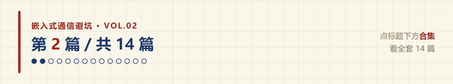
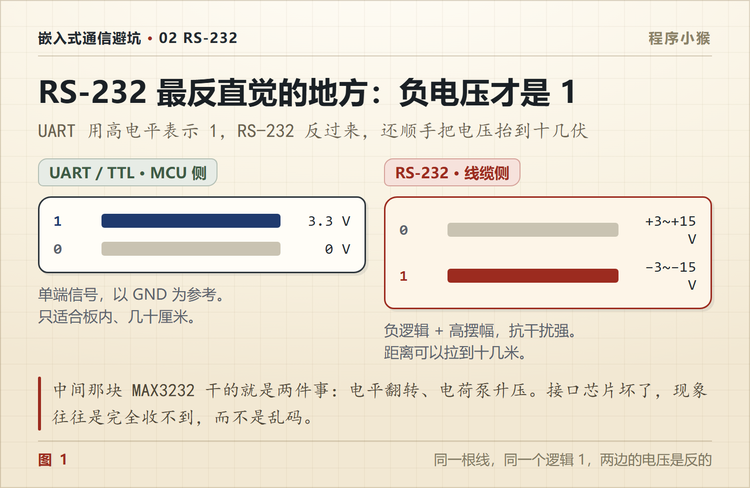
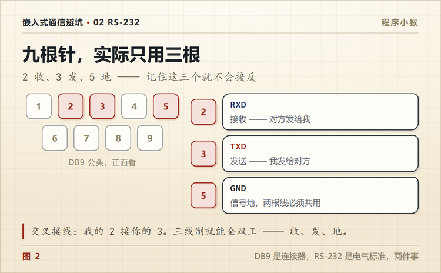

TTL 串口和 RS232 有什么区别？接错一次差点烧板子
🐵 程序小猴 · 嵌入式通信避坑 Vol.02
一个是芯片引脚，一个是工业接口，中间差着一整套电气标准。

第一次把板子接到工控机上，我干了一件很蠢的事。
MCU 的 TX 引出来，杜邦线一头，DB9 的插针另一头，就这么连上了。串口助手上什么都没有，偶尔蹦两个乱码。
我以为波特率不对，试了一圈。
后来翻工控机手册才发现，那个九针口是 RS-232，不是我以为的 TTL 串口。两边的电平定义根本不是一回事。
一、UART 和 RS-232 不是一层东西
这两个词经常被混着用。其实一个管逻辑，一个管电压。
| TTL UART | RS-232 | |
|---|---|---|
| 谁定的 | 芯片外设 | EIA 标准 |
| 高电平 | 3.3V 或 5V | -3V ~ -15V |
| 低电平 | 0V | +3V ~ +15V |
| 逻辑 | 正逻辑 | 负逻辑 |
| 传输方式 | 单端 | 单端 |
| 距离 | 板内几十厘米 | 15 米（标准值） |
| 连接器 | 排针、端子 | DB9、DB25 |
UART 决定数据怎么一位一位排队出去，RS-232 决定这些 0 和 1 用多少伏表示。
RS-232 是 1960 年代定下来的标准，比 USB 早了三十多年。它活到今天，不是因为怀旧。
中间要加一颗收发器，常见的是 MAX3232。
二、负 12V 反而代表 1
这是 RS-232 最反直觉的地方。
TTL 里高电平是 1，大家习惯了。RS-232 反过来，负电压才是 1。
标准写的门限是这样。
| 电平范围 | 含义 |
|---|---|
| -3V ~ -15V | 逻辑 1（Mark） |
| +3V ~ +15V | 逻辑 0（Space） |
| -3V ~ +3V | 不确定区，不允许停留 |
典型设备空载时是 ±12V。MAX3232 这类芯片用 3.3V 供电，内部电荷泵升到 ±5.5V 左右，够到 ±3V 门限就行。
为什么不设计成正逻辑？
这套约定是从早期机电设备沿用下来的，不是为 CMOS 优化的结果。但它有个实际好处，双极性摆幅大，线缆上的共模干扰要同时把正负两个方向都推偏才会误判，比单极性 0/5V 抗噪。

三、别把 5V 直接连过去
回到我那次。
MCU 的 TX 空闲是高电平，3.3V 或者 5V。RS-232 的接收端在等的是 ±3V 以上的双极性信号。
3.3V 刚刚越过它 +3V 的门限，碰巧会被认成逻辑 0。但只要线长一点、信号衰减一点，或者接收端门限偏高，就落进不确定区了。
现象就是什么都没收到，或者一堆乱码。
反过来更危险。RS-232 的驱动端输出 -12V，直接打到 MCU 的引脚上，超过绝对最大额定值，IO 就废了。
所以中间那颗 MAX3232 不是可选项。它干两件事，把 TTL 电平翻译成 ±5V 到 ±12V，同时把逻辑反一次。
已经接错了怎么办？先看 MCU 还能不能正常输出。把那个引脚配成推挽输出，量一下高低电平对不对。能拉高也能拉低，基本没事；一直贴在某一个电平上、或者对地电阻明显变小，那就是被打穿了。
四、DB9 不等于 RS-232
这是我踩的第二个坑。
DB9 只是连接器的外形，九针 D 型。同一个壳子里可能跑着完全不同的东西。
- RS-232
- RS-485
- CAN
- 厂商自定义的信号
工控行业里这太常见了。看到 DB9 就按 RS-232 接，多半要出事。
插之前先翻手册的引脚定义。没有手册就拿万用表量一下空载电压，有 ±10V 左右的基本是 232，一对差分信号多半是 485。
五、现场怎么快速判断
手边没有手册的时候，我一般这么查。
看空载电压。万用表直流档，红表笔点针脚，黑表笔点外壳或者 5 脚。悬空状态下 232 的 TX 是负电压，落在 -5V 到 -12V。TTL 那边只有 3.3V 或者 0V。
看芯片。板子上找 MAX3232、SP3232、ADM3202，有就是 232。找 MAX3485、SP3485 就是 485。
看用了几根线。只接三根的多半是 232；485 通常只用两根，而且经常接在端子台上，压根不给 DB9。
三招一起用，基本不会认错。
六、三根线就够
RS-232 名义上九针，实际大多数设备只用三根。
| 针脚 | 信号 | 方向（DTE） |
|---|---|---|
| 2 | RXD | 收 |
| 3 | TXD | 发 |
| 5 | GND | 地 |
剩下六根是硬件流控和状态线，不用流控的时候可以全悬空。

但这里有个坑，DTE 和 DCE 的 2、3 是反的。
电脑是 DTE，2 收 3 发。Modem 是 DCE，2 发 3 收。两个 DTE 对接，2 对 2、3 对 3 就是不通，得把 2 和 3 交叉，这就是常说的交叉线，也叫 null modem。
现象很好认，两头都发得出去，两头都收不到。
七、它为什么还没死
USB 普及这么多年，RS-232 还活在工控机、仪器仪表和 PLC 上。
原因就三个，简单、成熟、隔离便宜。
点对点、十几米以内、波特率不超过 115200 的场景，它完全够用，而且调试的时候不需要装驱动。拿一根 USB 转串口线接上就能看日志，这个便利性在很多现场比速度重要。
工程上选方案不是挑最新的，是挑复杂度最低、还能可靠满足需求的。
八、什么时候该换
如果线要拉几十米，或者要挂好几个设备，RS-232 就该让位了。
它是单端信号，一根线对地，干扰直接叠在信号上。距离一长，摆幅衰减、共模干扰一起来，误码率就上去了。
这种场景该上 RS-485，差分传输，两根线互相参考，几百米没问题。
下一篇讲 485 为什么能跑那么远。
九、按这个顺序查

| 顺序 | 查什么 | 怎么查 | 典型现象 |
|---|---|---|---|
| ① | 接口是不是 232 | 万用表量空载电压 | 完全收不到 |
| ② | 电平转换有没有 | 找 MAX3232 一类芯片 | 收到乱码 |
| ③ | 2、3 有没有交叉 | 核对 DTE/DCE | 两头都收不到 |
| ④ | 共地 | 量 GND 间电压 | 偶发错 |
| ⑤ | 波特率与帧格式 | 抓波形 | 全乱 |
| ⑥ | 流控 | 关掉 RTS/CTS 试试 | 发几个字节就卡住 |
从上往下走，前两步能在两分钟内排除掉大半问题。

RS-232 本身不难。难的是它和 TTL 长得像、名字也像，一不留神就当成一回事。
你第一次接 RS-232，是翻了手册还是直接插的？评论区说说。
📌 这是「嵌入式通信避坑」第 2 篇，全系列 14 篇，从串口一路讲到 CAN 和无线选型。
💬 觉得有用就点个在看，下一篇拆 RS-485 怎么接线、不通了从哪查。